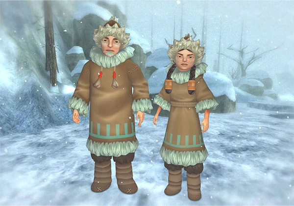

Unlock levelLevel 15
Reputation pathNeutral to Popular
RegionDino Valley
01
2016–2018
Unlocking the Kallters
To find and unlock the Kallters, complete a multi-day progression path in the Valley of the Hidden Dinosaur.
The progression path
- Enter Dino Valley.Reach at least Level 15 and complete the questline where you help Nic Stoneground repair his crashed hot air balloon. This opens the Valley of the Hidden Dinosaur.
- Help Nic Stoneground.Complete several days of exploration and setup quests for Nic Stoneground and Professor Einstein.
- Discover the Icengate.After roughly three days of consistent questing in the valley, a quest leads you up the Hidden Road to the massive frozen Icengate.
- Meet the outer expedition.Outside the gate, you finally meet Nanook and Sedna, the representatives of the Kallters’ outer expedition.
The reputation grind
Once unlocked, the Kallters work primarily as a reputation faction. Build their trust from Neutral to Popular to access their exclusive items and Generation 1 Fjord horses.
The dailies
Gather unique valley resources such as call stones, ice, thistles, ice berries, ice chestnuts, and snow weasels.
The reward
Reach the required reputation tier to purchase the Generation 1 Fjord horses sold outside the Icengate.
Find Bad Roses online
Follow the petals.
Join the conversation, meet the club, and see what’s happening around Jorvik.
Come say hello
Community
Discord.
Our open community server is where the waitlist lives and where everyone can meet the Roses.
Join the community ↗OPEN TO EVERYONELife around Jorvik
Bad Roses
on TikTok.
Find our short videos and little snapshots from club life.
Follow on TikTok ↗CLIPS FROM JORVIKOfficial social platforms are run by their respective companies. External links open their websites or apps.